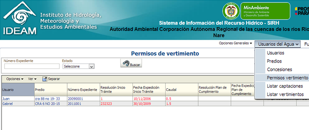

Para consultar todos los permisos de vertimiento registrados en el sistema, ingrese por el menú "Usuarios del agua" y de clic en la opción "Permisos de vertimiento". El sistema le presentará el listado de usuarios acompañados de su predio, numero del expediente del permiso de vertimiento y otra información de interés.

Desde allí usted podrá hacer búsquedas por el número del expediente y emplear los enlaces disponibles para ver la información del usuario o del predio.